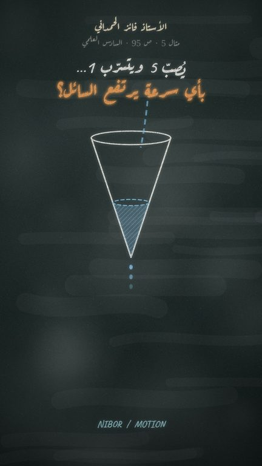
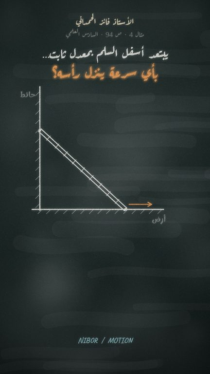
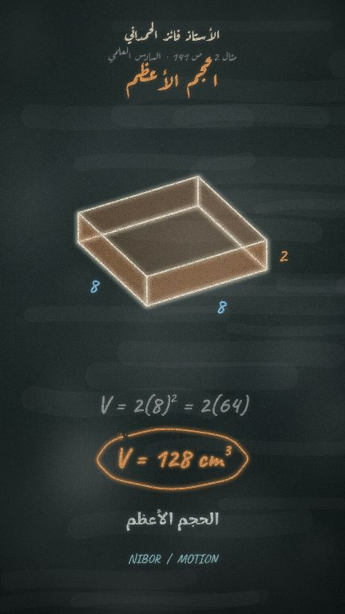
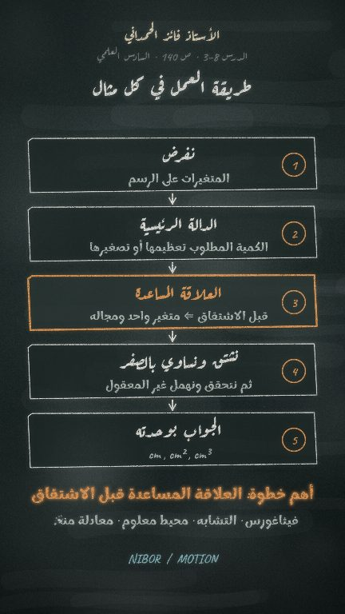

‹ المكتبة
ريلز السبورة
إعداد: الأستاذ فائز الحمداني
▶
جارٍ تحميل الخطوط…
اختر المثال

مثال 5 · ص 95
المرشح المخروطي

مثال 4 · ص 94
السلم

مثال 2 · ص 141
أكبر صندوق

الدرس 3−8 · ص 140
الفكرة وخطوات الحل
المشاهد
⏮
▶
⏭
0:00 / 0:00
🔊
⛶